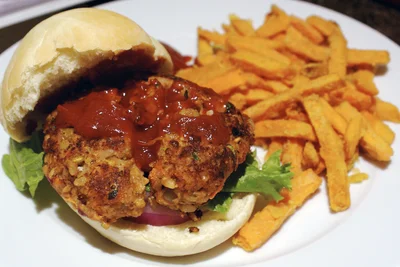
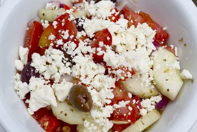
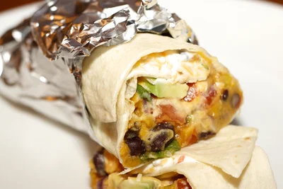

Den ultimative veggie burger
02:15
| Avanceret
Har du børn, der ikke er vilde med grøntsager? I denne samling har vi gjort det nemt at snige de gode ting ind i maden uden brok.
Her finder du lækre retter som guacamolepasta og cremet grøntsagssuppe, hvor smagen er i fokus - og grøntsagerne glider ubemærket med.


Gør klar til en hyggelig forårs grill aften med lækre retter, hele familien kan samles om. Her finder du alt fra saftige burgere til frisk græsk salat og klassisk kartoffelsalat.
Perfekt til de første rare dage, hvor maden gerne må være nem, smagfuld og fyldt med god stemning omkring bordet.
Har du travlt i hverdagen, men vil stadig gerne lave god mad til familien? Her finder du enkle og velsmagende retter, der er hurtige at lave og nemme at gå til.
Prøv fx en cremet one pot pasta eller en hurtig kylling i fad – perfekt til dage, hvor det skal være nemt uden at gå på kompromis med smagen.

Gør madpakken lidt sjovere med små, lækre retter der både mætter og overrasker. Her finder du idéer, der er nemme at tage med og som børnene rent faktisk gider spise og gå til at spise.
Prøv fx små pizzaruller eller wraps med kylling og grønt – perfekt til en varieret og indbydende madpakke.